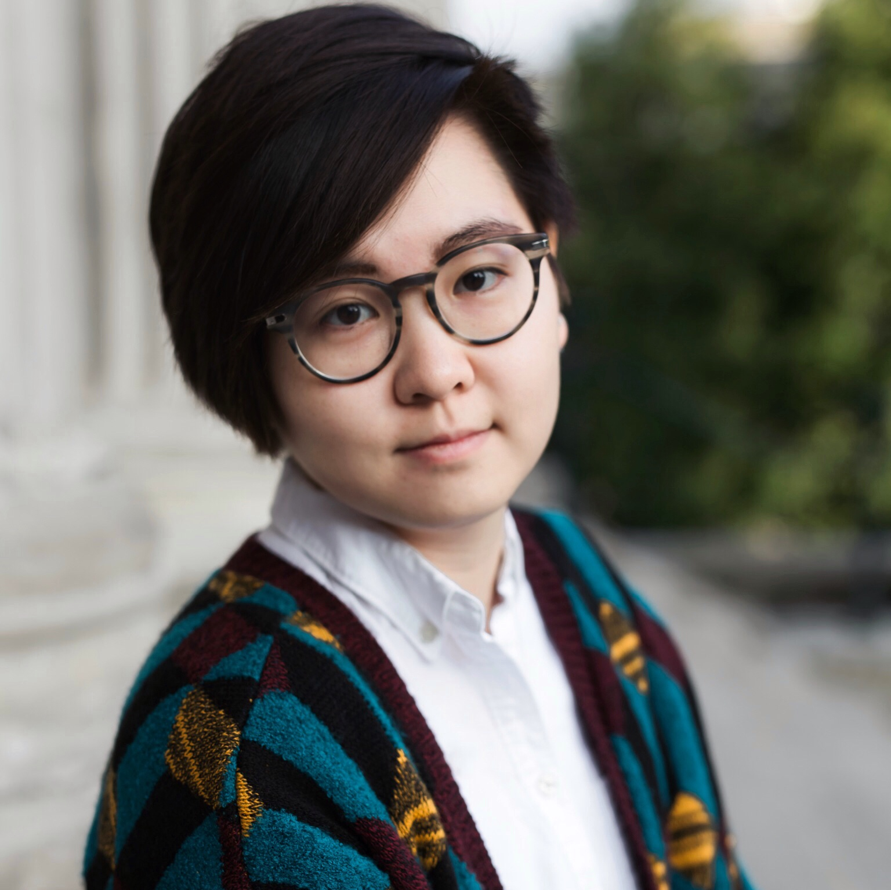

 </div>

I am trying to use my brain to study how the brain works.

I received my B.S.degree in Psychology from University College London (2014) and an MPhil in Experimental Neuroscience from Imperial College London (2015). Before I started by PhD training with Prof. Kate Jeffery, I was a visiting graduate student at Harvard University (2016). 

Recently, I received my Ph.D. degree in Behavioural Neuroscience from University College London (2021), where I found two distinct 'compass' systems for spatial orientation in the rodent brain. 

After a decade spent in London, UK, I have returned to my home country, China. I am currently conducting a postdoctoral research with Dr Ninglong Xu at the Institute of Neuroscience, Chinese Academy of Sciences in Shanghai, aiming to understand how nonhuman primates make flexible decisions and the underlying neural mechanisms. 


